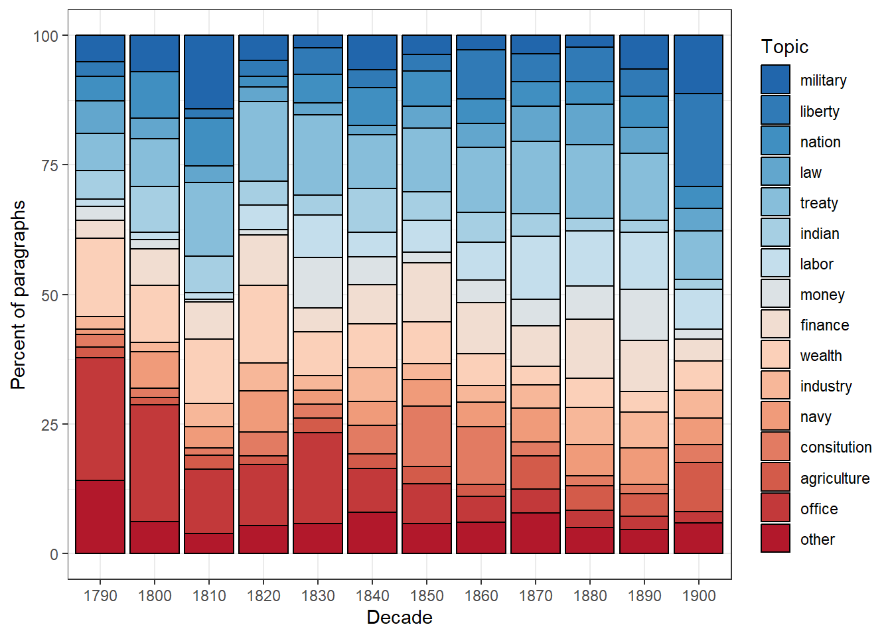

Topic Modeling with R
Martin Schweinberger
2024-05-17

Introduction
This tutorial introduces topic modeling using R.

This tutorial is aimed at beginners and intermediate users of R with the aim of showcasing how to perform basic topic modeling on textual data using R and how to visualize the results of such a model. The aim is not to provide a fully-fledged analysis but rather to show and exemplify selected useful methods associated with topic modeling.
To be able to follow this tutorial, we suggest you check out and
familiarize yourself with the content of the following R
Basics tutorials:
- Getting started with R
- Loading, saving, and generating data in R
- String Processing in R
- Regular Expressions in R
Click here1 to
download the entire R Notebook for this
tutorial.

Click
here
to open a Jupyter notebook that allows you to follow this tutorial
interactively. This means that you can execute, change, and edit the
code used in this tutorial to help you better understand how the code
shown here works (make sure you run all code chunks in the order in
which they appear to avoid running into errors).
TOPIC MODEL TOOL
Click on this  badge to
open an notebook-based tool
badge to
open an notebook-based tool
that allows you to upload your own
text(s), perform topic modelling on them, and download the results.
This tutorial builds heavily on and uses materials from (Silge and Robinson 2017, chap. 6) (see here) and this tutorial on topic modelling using R by Andreas Niekler and Gregor Wiedemann (see Wiedemann and Niekler 2017). The tutorial by Andreas Niekler and Gregor Wiedemann is more thorough, goes into more detail than this tutorial, and covers many more very useful text mining methods.
Topic models aim to find topics (which are operationalized as bundles of correlating terms) in documents to see what the texts are about.
Topic models refers to a suit of methods employed to uncover latent structures within a corpus of text. These models operate on the premise of identifying abstract topics that recur across documents. In essence, topic models sift through the textual data to discern recurring patterns of word co-occurrence, revealing underlying semantic themes (Busso et al. 2022; Blei, Ng, and Jordan 2003a). This technique is particularly prevalent in text mining, where it serves to unveil hidden semantic structures in large volumes of textual data.
Conceptually, topics can be understood as clusters of co-occurring terms, indicative of shared semantic domains within the text. The underlying assumption is that if a document pertains to a specific topic, words related to that topic will exhibit higher frequency compared to documents addressing other subjects. For example, in documents discussing dogs, terms like dog and bone are likely to feature prominently, while in documents focusing on cats, cat and meow would be more prevalent. Meanwhile, ubiquitous terms such as the and is are expected to occur with similar frequency across diverse topics, serving as noise rather than indicative signals of topic specificity.
Various methods exist for determining topics within topic models. For instance, Gerlach, Peixoto, and Altmann (2018) and Hyland et al. (2021) advocate for an approach grounded in stochastic block models. However, most applications of topic models use Latent Dirichlet Allocation (LDA) (Blei, Ng, and Jordan 2003a) or Structural Topic Modeling (Roberts, Stewart, and Tingley 2016).
LDA, in particular, emerges as a widely embraced technique for fitting topic models. It operates by treating each document as a blend of topics and each topic as a blend of words. Consequently, documents can exhibit content overlaps, akin to the fluidity observed in natural language usage, rather than being strictly segregated into distinct groups.
Gillings and Hardie (2022) state that topic modelling is based on the following key assumptions:
- The corpus comprises a substantial number of documents.
- A topic is delineated as a set of words with varying probabilities
of occurrence across the documents.
- Each document exhibits diverse degrees of association with multiple
topics.
- The collection is structured by underlying topics, which are finite in number, organizing the corpus.
Given the availability of vast amounts of textual data, topic models can help to organize and offer insights and assist in understanding large collections of unstructured text and they are widely used in natural language processing and computational text analytics. However, the use of topic modelling in discourse studies has received criticism (Brookes and McEnery 2019) due to the following issues:
Thematic Coherence: While topic modeling can group texts into topics, the degree of thematic coherence varies. Some topics may be thematically coherent, but others may lack cohesion or accuracy in capturing the underlying themes present in the texts.
Nuanced Perspective: Compared to more traditional approaches to discourse analysis, topic modeling often provides a less nuanced perspective on the data. The automatically generated topics may overlook subtle nuances and intricacies present in the texts, leading to a less accurate representation of the discourse.
Distance from Reality: Brookes and McEnery (2019) suggest that the insights derived from topic modeling may not fully capture the “reality” of the texts. The topics generated by the model may not accurately reflect the complex nature of the discourse, leading to potential misinterpretations or oversimplifications of the data.
Utility for Discourse Analysts: While topic modeling may offer a method for organizing and studying sizable data sets, Brookes and McEnery (2019) questions the utility for discourse analysts and suggests that traditional discourse analysis methods consistently provide a more nuanced and accurate perspective on the data compared to topic modeling approaches.
This criticism is certainly valid if topic modeling is solely reliant on a purely data-driven approach without human intervention. In this tutorial, we will demonstrate how to combine data-driven topic modeling with human-supervised seeded methods to arrive at more reliable and accurate topics.
Preparation and session set up
This tutorial is conducted within the R environment. If you’re new to R or haven’t installed it yet, you can find an introduction to R and further instructions on how to use it here. To ensure smooth execution of the scripts provided in this tutorial, it’s necessary to install specific packages from the R library. Before proceeding to the code examples, please ensure you’ve installed these packages by running the code provided below. If you’ve already installed the required packages, feel free to skip ahead and disregard this section. To install the necessary packages, simply execute the following code. Please note that installation may take some time (usually between 1 and 5 minutes), so there’s no need to be concerned if it takes a while.
# install packages
install.packages("dplyr")
install.packages("flextable")
install.packages("ggplot2")
install.packages("lda")
install.packages("ldatuning")
install.packages("quanteda")
install.packages("RColorBrewer")
install.packages("reshape2")
install.packages("slam")
install.packages("stringr")
install.packages("tidyr")
install.packages("tidytext")
install.packages("tm")
install.packages("topicmodels")
install.packages("wordcloud")
# install klippy for copy-to-clipboard button in code chunks
install.packages("remotes")
remotes::install_github("rlesur/klippy")Next, we activate the packages.
# set options
options(stringsAsFactors = F) # no automatic data transformation
options("scipen" = 100, "digits" = 4) # suppress math annotation
# load packages
library(dplyr)
library(flextable)
library(ggplot2)
library(lda)
library(ldatuning)
library(quanteda)
library(RColorBrewer)
library(reshape2)
library(slam)
library(stringr)
library(tidyr)
library(tidytext)
library(tm)
library(topicmodels)
library(wordcloud)
# activate klippy for copy-to-clipboard button
klippy::klippy()Once you have installed R and RStudio and once you have initiated the session by executing the code shown above, you are good to go.
Topic Modelling
In this tutorial, we’ll explore a two-step approach to topic modeling. Initially, we’ll employ an unsupervised method to generate a preliminary topic model, uncovering inherent topics within the data. Subsequently, we’ll introduce a human-supervised, seeded model, informed by the outcomes of the initial data-driven approach. Following this (recommended) procedure, we’ll then delve into an alternative purely data-driven approach.
Our tutorial begins by gathering the necessary corpus data. We’ll be focusing on analyzing the State of the Union Addresses (SOTU) delivered by US presidents, with the aim of understanding how the addressed topics have evolved over time. Given the length of these addresses (amounting to 231 in total), it’s important to acknowledge that document length can influence topic modeling outcomes. In cases where texts are exceptionally short (like Twitter posts) or long (such as books), adjusting the document units for modeling purposes can be beneficial—either by combining or splitting them accordingly.
To tailor our approach to the SOTU speeches, we’ve chosen to model at
the paragraph level instead of analyzing entire speeches at once. This
allows for a more detailed analysis, potentially leading to clearer and
more interpretable topics. We’ve provided a data set named
sotu_paragraphs.rda, which contains the speeches segmented
into paragraphs for easier analysis.
Human-in-the-loop Topic Modelling
In this human-in-the-loop approach to topic modelling which mainly
uses and combines the quanteda package (Benoit et al.
2018), the topicmodels package (Grün and Hornik
2024, 2011), and the
seededlda package (Watanabe and Xuan-Hieu 2024). Now
that we have cleaned the data, we can perform the topic modelling. This
consists of two steps:
First, we perform an unsupervised LDA. We do this to check what topics are in our corpus.
Then, we perform a supervised LDA (based on the results of the unsupervised LDA) to identify meaningful topics in our data. For the supervised LDA, we define so-called seed terms that help in generating coherent topics.
Loading and preparing data
When preparing the data for analysis, we employ several preprocessing steps to ensure its cleanliness and readiness for analysis. Initially, we load the data and then remove punctuation, symbols, and numerical characters. Additionally, we eliminate common stop words, such as the and and, which can introduce noise and hinder the topic modeling process. To standardize the text, we convert it to lowercase and, lastly, we apply stemming to reduce words to their base form.
# load data
txts <- base::readRDS(url("https://slcladal.github.io/data/sotu_paragraphs.rda", "rb"))
txts$text %>%
# tokenise
quanteda::tokens(remove_punct = TRUE, # remove punctuation
remove_symbols = TRUE, # remove symbols
remove_number = TRUE) %>% # remove numbers
# remove stop words
quanteda::tokens_select(pattern = stopwords("en"), selection = "remove") %>%
# stemming
quanteda::tokens_wordstem() %>%
# convert to document-frequency matrix
quanteda::dfm(tolower = T) -> ctxts
# add docvars
docvars(ctxts, "president") <- txts$president
docvars(ctxts, "date") <- txts$date
docvars(ctxts, "speechid") <- txts$speech_doc_id
docvars(ctxts, "docid") <- txts$doc_id
# clean data
ctxts <- dfm_subset(ctxts, ntoken(ctxts) > 0)
# inspect data
ctxts[1:5, 1:5]## Document-feature matrix of: 5 documents, 5 features (80.00% sparse) and 4 docvars.
## features
## docs fellow-citizen senat hous repres embrac
## text1 1 1 1 1 0
## text2 0 0 0 0 1
## text3 0 0 0 0 0
## text4 0 0 0 0 0
## text5 0 0 0 0 0Initial unsupervised topic model
Now that we have loaded and prepared the data for analysis, we will follow a two-step approach.
First, we perform an unsupervised topic model using Latent Dirichlet Allocation (LDA) to identify the topics present in our data. This initial step helps us understand the broad themes and structure within the data set.
Then, based on the results of the unsupervised topic model, we conduct a supervised topic model using LDA to refine and identify more meaningful topics in our data.
This combined approach allows us to leverage both data-driven insights and expert supervision to enhance the accuracy and interpretability of the topics.
In the initial step that implements a unsupervised, data-driven topic
model, we vary the number of topics the LDA algorithm looks for until we
identify coherent topics in the data. We use the LDA
function from the topicmodels package instead of the
textmodel_lda function from the seededlda
package because the former allows us to include a seed. Including a seed
ensures that the results of this unsupervised topic model are
reproducible, which is not the case if we do not seed the model, as each
model will produce different results without setting a seed.
# generate model: change k to different numbers, e.g. 10 or 20 and look for consistencies in the keywords for the topics below.
topicmodels::LDA(ctxts, k = 15, control = list(seed = 1234)) -> ddldaNow that we have generated an initial data-driven model, the next step is to inspect it to evaluate its performance and understand the topics it has identified. To do this, we need to examine the terms associated with each detected topic. By analyzing these terms, we can gain insights into the themes represented by each topic and assess the coherence and relevance of the model’s output.
# define number of topics
ntopics = 15
# define number of terms
nterms = 10
# generate table
tidytext::tidy(ddlda, matrix = "beta") %>%
dplyr::group_by(topic) %>%
dplyr::slice_max(beta, n = nterms) %>%
dplyr::ungroup() %>%
dplyr::arrange(topic, -beta) %>%
dplyr::mutate(term = paste(term, " (", round(beta, 3), ")", sep = ""),
topic = paste("topic", topic),
topic = factor(topic, levels = c(paste("topic", 1:ntopics))),
top = rep(paste("top", 1:nterms), nrow(.)/nterms),
top = factor(top, levels = c(paste("top", 1:nterms)))) %>%
dplyr::select(-beta) %>%
tidyr::spread(topic, term) -> ddlda_top_terms
ddlda_top_terms## # A tibble: 10 × 16
## top `topic 1` `topic 2` `topic 3` `topic 4` `topic 5` `topic 6` `topic 7`
## <fct> <chr> <chr> <chr> <chr> <chr> <chr> <chr>
## 1 top 1 state (0.… countri … state (0… govern (… state (0… state (0… state (0…
## 2 top 2 countri (… upon (0.… unite (0… will (0.… countri … will (0.… upon (0.…
## 3 top 3 will (0.0… present … congress… year (0.… will (0.… unite (0… will (0.…
## 4 top 4 congress … war (0.0… may (0.0… unite (0… congress… govern (… congress…
## 5 top 5 nation (0… can (0.0… treati (… law (0.0… public (… power (0… may (0.0…
## 6 top 6 can (0.00… unite (0… citizen … may (0.0… year (0.… law (0.0… govern (…
## 7 top 7 subject (… nation (… nation (… upon (0.… nation (… peopl (0… citizen …
## 8 top 8 govern (0… author (… great (0… act (0.0… can (0.0… last (0.… nation (…
## 9 top 9 land (0.0… may (0.0… territor… public (… law (0.0… duti (0.… import (…
## 10 top 10 made (0.0… subject … made (0.… last (0.… import (… part (0.… great (0…
## # ℹ 8 more variables: `topic 8` <chr>, `topic 9` <chr>, `topic 10` <chr>,
## # `topic 11` <chr>, `topic 12` <chr>, `topic 13` <chr>, `topic 14` <chr>,
## # `topic 15` <chr>In a real analysis, we would re-run the unsupervised model multiple times, adjusting the number of topics that the Latent Dirichlet Allocation (LDA) algorithm “looks for.” For each iteration, we would inspect the key terms associated with the identified topics to check their thematic consistency. This evaluation helps us determine whether the results of the topic model make sense and accurately reflect the themes present in the data. By varying the number of topics and examining the corresponding key terms, we can identify the optimal number of topics that best represent the underlying themes in our data set. However, we will skip re-running the model here, as this is just a tutorial intended to showcase the process rather than a comprehensive analysis.
To obtain a comprehensive table of terms and their association strengths with topics (the beta values), follow the steps outlined below. This table can help verify if the data contains thematically distinct topics. Additionally, visualizations and statistical modeling can be employed to compare the distinctness of topics and determine the ideal number of topics. However, I strongly recommend not solely relying on statistical measures when identifying the optimal number of topics. In my experience, human intuition is still essential for evaluating topic coherence and consistency.
# extract topics
ddlda_topics <- tidy(ddlda, matrix = "beta")
# inspect
head(ddlda_topics, 20)## # A tibble: 20 × 3
## topic term beta
## <int> <chr> <dbl>
## 1 1 fellow-citizen 0.000249
## 2 2 fellow-citizen 0.000351
## 3 3 fellow-citizen 0.000416
## 4 4 fellow-citizen 0.0000333
## 5 5 fellow-citizen 0.0000797
## 6 6 fellow-citizen 0.000183
## 7 7 fellow-citizen 0.000445
## 8 8 fellow-citizen 0.000306
## 9 9 fellow-citizen 0.000381
## 10 10 fellow-citizen 0.000332
## 11 11 fellow-citizen 0.000187
## 12 12 fellow-citizen 0.000147
## 13 13 fellow-citizen 0.000278
## 14 14 fellow-citizen 0.000336
## 15 15 fellow-citizen 0.000205
## 16 1 senat 0.000708
## 17 2 senat 0.000477
## 18 3 senat 0.00263
## 19 4 senat 0.00118
## 20 5 senat 0.000436The purpose of this initial step, in which we generate data-driven unsupervised topic models, is to identify the number of coherent topics present in the data and to determine the key terms associated with these topics. These key terms will then be used as seed terms in the next step: the supervised, seeded topic model. This approach ensures that the supervised model is grounded in the actual thematic structure of the data set, enhancing the accuracy and relevance of the identified topics.
Supervised, seeded topic model
To implement the supervised, seeded topic model, we start by creating a dictionary containing the seed terms we have identified in the first step.
To check terms (to see if ), you can use the following code chunk:
ddlda_topics %>% select(term) %>% unique() %>% filter(str_detect(term, "agri"))## # A tibble: 3 × 1
## term
## <chr>
## 1 agricultur
## 2 agriculturist
## 3 agricultural-colleg# semisupervised LDA
dict <- dictionary(list(military = c("armi", "war", "militari", "conflict"),
liberty = c("freedom", "liberti", "free"),
nation = c("nation", "countri", "citizen"),
law = c("law", "court", "prison"),
treaty = c("claim", "treati", "negoti"),
indian = c("indian", "tribe", "territori"),
labor = c("labor", "work", "condit"),
money = c("bank", "silver", "gold", "currenc", "money"),
finance = c("debt", "invest", "financ"),
wealth = c("prosper", "peac", "wealth"),
industry = c("produc", "industri", "manufactur"),
navy = c("navi", "ship", "vessel", "naval"),
consitution = c("constitut", "power", "state"),
agriculture = c("agricultur", "grow", "land"),
office = c("office", "serv", "duti")))
tmod_slda <- seededlda::textmodel_seededlda(ctxts,
dict,
residual = TRUE,
min_termfreq = 2)
# inspect
seededlda::terms(tmod_slda)## military liberty nation law treaty indian
## [1,] "war" "free" "countri" "law" "treati" "territori"
## [2,] "militari" "peopl" "nation" "court" "claim" "indian"
## [3,] "armi" "can" "citizen" "case" "govern" "tribe"
## [4,] "forc" "govern" "govern" "person" "negoti" "mexico"
## [5,] "offic" "must" "foreign" "may" "unite" "part"
## [6,] "servic" "upon" "american" "provis" "minist" "new"
## [7,] "command" "liberti" "upon" "upon" "relat" "texa"
## [8,] "men" "everi" "right" "offic" "two" "will"
## [9,] "conflict" "public" "time" "execut" "convent" "govern"
## [10,] "order" "will" "properti" "subject" "britain" "made"
## labor money finance wealth industry navy
## [1,] "condit" "bank" "year" "peac" "produc" "vessel"
## [2,] "work" "money" "debt" "prosper" "industri" "navi"
## [3,] "labor" "gold" "amount" "will" "manufactur" "ship"
## [4,] "report" "currenc" "expenditur" "us" "product" "naval"
## [5,] "depart" "silver" "treasuri" "peopl" "import" "port"
## [6,] "congress" "govern" "increas" "great" "foreign" "coast"
## [7,] "secretari" "treasuri" "fiscal" "everi" "trade" "construct"
## [8,] "recommend" "note" "last" "interest" "increas" "sea"
## [9,] "servic" "issu" "revenu" "happi" "revenu" "commerc"
## [10,] "attent" "public" "estim" "world" "articl" "great"
## consitution agriculture office other
## [1,] "state" "land" "duti" "congress"
## [2,] "power" "agricultur" "will" "act"
## [3,] "constitut" "public" "may" "last"
## [4,] "unite" "grow" "can" "repres"
## [5,] "govern" "improv" "subject" "session"
## [6,] "right" "larg" "congress" "presid"
## [7,] "union" "year" "consider" "senat"
## [8,] "shall" "reserv" "measur" "hous"
## [9,] "one" "now" "shall" "upon"
## [10,] "act" "acr" "object" "author"Now, we extract files and create a data frame of topics and documents. This shows what topic is dominant in which file in tabular form.
# generate data frame
data.frame(tmod_slda$data$date, tmod_slda$data$president, seededlda::topics(tmod_slda)) %>%
dplyr::rename(Date = 1,
President = 2,
Topic = 3) %>%
dplyr::mutate(Date = stringr::str_remove_all(Date, "-.*"),
Date = stringr::str_replace_all(Date, ".$", "0")) %>%
dplyr::mutate_if(is.character, factor) -> topic_df
# inspect
head(topic_df)## Date President Topic
## text1 1790 George Washington other
## text2 1790 George Washington wealth
## text3 1790 George Washington office
## text4 1790 George Washington wealth
## text5 1790 George Washington office
## text6 1790 George Washington officeUsing the table (or data frame) we have just created, we can visualize the use of topics over time.
topic_df %>%
dplyr::group_by(Date, Topic) %>%
dplyr::summarise(freq = n()) %>%
ggplot(aes(x = Date, y = freq, fill = Topic)) +
geom_bar(stat="identity", position="fill", color = "black") +
theme_bw() +
labs(x = "Decade") +
scale_fill_manual(values = rev(colorRampPalette(brewer.pal(8, "RdBu"))(ntopics+1))) +
scale_y_continuous(name ="Percent of paragraphs", labels = seq(0, 100, 25))## `summarise()` has grouped output by 'Date'. You can override using the
## `.groups` argument.
The figure illustrates the relative frequency of topics over time in the State of the Union (SOTU) texts. Notably, paragraphs discussing the topic of “office,” characterized by key terms such as office, serv, and duti, have become less prominent over time. This trend suggests a decreasing emphasis on this particular theme, as evidenced by the diminishing number of paragraphs dedicated to it.
Data-driven Topic Modelling
In this part of the tutorial, we show an alternative approaches for performing data-driven topic modelling using LDA.
Loading and preparing data
When readying the data for analysis, we follow consistent
pre-processing steps, employing the tm package (Feinerer and Hornik
2024; Feinerer, Hornik, and Meyer
2008) for efficient data preparation and cleaning. First, we
load the data and convert it into a corpus object. Next, we convert the
text to lowercase, eliminating superfluous white spaces, and removing
stop words. Subsequently, we proceed to strip the data of punctuation,
symbols, and numerical characters. Finally, we apply stemming to
standardize words to their base form, ensuring uniformity throughout the
data set.
# load data
textdata <- base::readRDS(url("https://slcladal.github.io/data/sotu_paragraphs.rda", "rb"))
# create corpus object
tm::Corpus(DataframeSource(textdata)) %>%
# convert to lower case
tm::tm_map(content_transformer(tolower)) %>%
# remove superfluous white spaces
tm::tm_map(stripWhitespace) %>%
# remove stop words
tm::tm_map(removeWords, quanteda::stopwords()) %>%
# remove punctuation
tm::tm_map(removePunctuation, preserve_intra_word_dashes = TRUE) %>%
# remove numbers
tm::tm_map(removeNumbers) %>%
# stemming
tm::tm_map(stemDocument, language = "en") -> textcorpus
# inspect data
str(textcorpus)## Classes 'SimpleCorpus', 'Corpus' hidden list of 3
## $ content: Named chr [1:8833] "fellow-citizen senat hous repres" "embrac great satisfact opportun now present congratul present favor prospect public affair recent access import"| __truncated__ "resum consult general good can deriv encourag reflect measur last session satisfactori constitu novelti difficu"| __truncated__ "among mani interest object engag attent provid common defens merit particular regard prepar war one effectu mean preserv peac" ...
## ..- attr(*, "names")= chr [1:8833] "1" "2" "3" "4" ...
## $ meta :List of 1
## ..$ language: chr "en"
## ..- attr(*, "class")= chr "CorpusMeta"
## $ dmeta :'data.frame': 8833 obs. of 4 variables:
## ..$ speech_doc_id: int [1:8833] 1 1 1 1 1 1 1 1 1 1 ...
## ..$ speech_type : Factor w/ 1 level "State of the Union Address": 1 1 1 1 1 1 1 1 1 1 ...
## ..$ president : Factor w/ 23 levels "Abraham Lincoln",..: 7 7 7 7 7 7 7 7 7 7 ...
## ..$ date : chr [1:8833] "1790-01-08" "1790-01-08" "1790-01-08" "1790-01-08" ...Model calculation
Here’s the improved and expanded version of the paragraph:
After preprocessing, we have a clean corpus object called
textcorpus, which we use to calculate the unsupervised
Latent Dirichlet Allocation (LDA) topic model (Blei, Ng, and Jordan 2003b). To
perform this calculation, we first create a Document-Term Matrix (DTM)
from the textcorpus. In this step, we ensure that only
terms with a certain minimum frequency in the corpus are included (we
set the minimum frequency to 5). This selection process not only speeds
up the model calculation but also helps improve the model’s accuracy by
focusing on more relevant and frequently occurring terms. By filtering
out less common terms, we reduce noise and enhance the coherence of the
topics identified by the LDA model.
# compute document term matrix with terms >= minimumFrequency
minimumFrequency <- 5
DTM <- tm::DocumentTermMatrix(textcorpus,
control = list(bounds = list(global = c(minimumFrequency, Inf))))
# inspect the number of documents and terms in the DTM
dim(DTM)## [1] 8833 4472Due to vocabulary pruning, some rows in our Document-Term Matrix (DTM) may end up being empty. Latent Dirichlet Allocation (LDA) cannot handle empty rows, so we must remove these documents from both the DTM and the corresponding metadata. This step ensures that the topic modeling process runs smoothly without encountering errors caused by empty documents. Additionally, removing these empty rows helps maintain the integrity of our analysis by focusing only on documents that contain meaningful content.
sel_idx <- slam::row_sums(DTM) > 0
DTM <- DTM[sel_idx, ]
textdata <- textdata[sel_idx, ]
# inspect the number of documents and terms in the DTM
dim(DTM)## [1] 8811 4472The output shows that we have removed 22 documents (8833 - 8811) from the DTM.
As an unsupervised machine learning method, topic models are well-suited for exploring data. The primary goal of calculating topic models is to determine the proportionate composition of a fixed number of topics within the documents of a collection. Experimenting with different parameters is essential to identify the most suitable settings for your analysis needs.
For parameterized models such as Latent Dirichlet Allocation (LDA),
the number of topics K is the most critical parameter to
define in advance. Selecting the optimal K depends on
various factors. If K is too small, the collection is
divided into a few very general semantic contexts. Conversely, if
K is too large, the collection is divided into too many
topics, leading to overlaps and some topics being barely interpretable.
Finding the right balance is key to achieving meaningful and coherent
topics in your analysis.
An alternative to deciding on a set number of topics is to extract
parameters form a models using a rage of number of topics. This approach
can be useful when the number of topics is not theoretically motivated
or based on closer, qualitative inspection of the data. In the example
below, the determination of the optimal number of topics follows Murzintcev (n.d.), but we only use
two metrics (CaoJuan2009 and Deveaud2014) - it
is highly recommendable to inspect the results of the four metrics
available for the FindTopicsNumber function which are
Griffiths2004 (see Griffiths et al. 2004),
CaoJuan2009 (see Cao et al. 2009),
Arun2010 (see Arun et al. 2010), and
Deveaud2014 (see Deveaud, SanJuan, and Bellot
2014).
# create models with different number of topics
result <- ldatuning::FindTopicsNumber(
DTM,
topics = seq(from = 2, to = 20, by = 1),
metrics = c("CaoJuan2009", "Deveaud2014"),
method = "Gibbs",
control = list(seed = 77),
verbose = TRUE
)## fit models... done.
## calculate metrics:
## CaoJuan2009... done.
## Deveaud2014... done.We can now plot the results. In this case, we have only use two
methods CaoJuan2009 and Griffith2004. The best
number of topics shows low values for CaoJuan2009 and high
values for Griffith2004 (optimally, several methods should
converge and show peaks and dips respectively for a certain number of
topics).
FindTopicsNumber_plot(result)For our first analysis, however, we choose a thematic “resolution” of
K = 20 topics. In contrast to a resolution of 100 or more,
this number of topics can be evaluated qualitatively very easy.
# number of topics
K <- 20
# set random number generator seed
set.seed(9161)
# compute the LDA model, inference via 1000 iterations of Gibbs sampling
topicModel <- topicmodels::LDA(DTM, K, method="Gibbs", control=list(iter = 500, verbose = 25))## K = 20; V = 4472; M = 8811
## Sampling 500 iterations!
## Iteration 25 ...
## Iteration 50 ...
## Iteration 75 ...
## Iteration 100 ...
## Iteration 125 ...
## Iteration 150 ...
## Iteration 175 ...
## Iteration 200 ...
## Iteration 225 ...
## Iteration 250 ...
## Iteration 275 ...
## Iteration 300 ...
## Iteration 325 ...
## Iteration 350 ...
## Iteration 375 ...
## Iteration 400 ...
## Iteration 425 ...
## Iteration 450 ...
## Iteration 475 ...
## Iteration 500 ...
## Gibbs sampling completed!# save results
tmResult <- posterior(topicModel)
# save theta values
theta <- tmResult$topics
# save beta values
beta <- tmResult$terms
# reset topic names
topicNames <- apply(terms(topicModel, 5), 2, paste, collapse = " ")Depending on the size of the vocabulary, the collection size and the number K, the inference of topic models can take a very long time. This calculation may take several minutes. If it takes too long, reduce the vocabulary in the DTM by increasing the minimum frequency in the previous step.
Let’s take a look at the 10 most likely terms within the term
probabilities beta of the inferred topics.
# create a data frame from the topic model data
tidytext::tidy(topicModel, matrix = "beta") %>%
# ensure topics are factors with specific levels
dplyr::mutate(topic = paste0("topic", as.character(topic)),
topic = factor(topic, levels = paste0("topic", 1:20))) %>%
# group the data by topic
dplyr::group_by(topic) %>%
# arrange terms within each topic by beta value (ascending)
dplyr::arrange(topic, -beta) %>%
# select the top 10 terms with the highest beta values for each topic
dplyr::top_n(10) %>%
# add beta to term
dplyr::mutate(term = paste0(term, " (", round(beta, 3), ")")) %>%
# remove the beta column as it is now part of the term string
dplyr::select(-beta) %>%
# ungroup the data frame
dplyr::ungroup() %>%
# create an id column for each term's position within the topic
dplyr::mutate(id = rep(1:10, 20)) %>%
# pivot the data to a wider format with topics as columns
tidyr::pivot_wider(names_from = topic, values_from = term) -> topterms ## Selecting by beta# inspect
topterms## # A tibble: 10 × 21
## id topic1 topic2 topic3 topic4 topic5 topic6 topic7 topic8 topic9 topic10
## <int> <chr> <chr> <chr> <chr> <chr> <chr> <chr> <chr> <chr> <chr>
## 1 1 war (0… natio… gover… state… act (… may (… congr… new (… state… year (…
## 2 2 forc (… count… power… const… congr… upon … subje… great… terri… amount…
## 3 3 milita… peopl… natio… power… last … duti … recom… line … india… expend…
## 4 4 navi (… everi… indep… repre… made … shall… consi… const… mexic… increa…
## 5 5 armi (… prosp… princ… union… sessi… law (… atten… pacif… unit … treasu…
## 6 6 men (0… great… right… gover… autho… time … legis… estab… part … end (0…
## 7 7 offic … insti… polic… peopl… provi… requi… impor… compl… tribe… estim …
## 8 8 comman… happi… war (… hous … day (… prope… upon … coast… withi… revenu…
## 9 9 naval … honor… maint… exerc… first… neces… sugge… commu… exten… fiscal…
## 10 10 servic… gener… inter… gener… effec… execu… prese… impor… texa … sum (0…
## # ℹ 10 more variables: topic11 <chr>, topic12 <chr>, topic13 <chr>,
## # topic14 <chr>, topic15 <chr>, topic16 <chr>, topic17 <chr>, topic18 <chr>,
## # topic19 <chr>, topic20 <chr>For the next steps, we want to give the topics more descriptive names than just numbers. Therefore, we simply concatenate the five most likely terms of each topic to a string that represents a pseudo-name for each topic.
topicNames <- apply(terms(topicModel, 5), 2, paste, collapse = " ")
# inspect first 3 topic names
topicNames[1:3]## Topic 1 Topic 2
## "war forc militari navi armi" "nation countri peopl everi prosper"
## Topic 3
## "govern power nation independ principl"Visualization of Words and Topics
Although wordclouds may not be optimal for scientific purposes they can provide a quick visual overview of a set of terms. Let’s look at some topics as wordcloud.
In the following code, you can change the variable topicToViz with values between 1 and 20 to display other topics.
# visualize topics as word cloud
# choose topic of interest by a term contained in its name
topicToViz <- grep('mexico', topicNames)[1]
# select to 50 most probable terms from the topic by sorting the term-topic-probability vector in decreasing order
top50terms <- sort(tmResult$terms[topicToViz,], decreasing=TRUE)[1:50]
words <- names(top50terms)
# extract the probabilities of each of the 50 terms
probabilities <- sort(tmResult$terms[topicToViz,], decreasing=TRUE)[1:50]
# visualize the terms as wordcloud
mycolors <- brewer.pal(8, "Dark2")
wordcloud(words, probabilities, random.order = FALSE, color = mycolors)Let us now look more closely at the distribution of topics within individual documents. To this end, we visualize the distribution in 3 sample documents.
Let us first take a look at the contents of three sample documents:
exampleIds <- c(2, 100, 200)
# first 400 characters of file 2
stringr::str_sub(txts$text[2], 1, 400)## [1] "I embrace with great satisfaction the opportunity which now presents itself\nof congratulating you on the present favorable prospects of our public\naffairs. The recent accession of the important state of North Carolina to\nthe Constitution of the United States (of which official information has\nbeen received), the rising credit and respectability of our country, the\ngeneral and increasing good will "# first 400 characters of file 100
stringr::str_sub(txts$text[100], 1, 400)## [1] "Provision is likewise requisite for the reimbursement of the loan which has\nbeen made of the Bank of the United States, pursuant to the eleventh\nsection of the act by which it is incorporated. In fulfilling the public\nstipulations in this particular it is expected a valuable saving will be\nmade."# first 400 characters of file 200
stringr::str_sub(txts$text[200], 1, 400)## [1] "After many delays and disappointments arising out of the European war, the\nfinal arrangements for fulfilling the engagements made to the Dey and\nRegency of Algiers will in all present appearance be crowned with success,\nbut under great, though inevitable, disadvantages in the pecuniary\ntransactions occasioned by that war, which will render further provision\nnecessary. The actual liberation of all "After looking into the documents, we visualize the topic distributions within the documents.
N <- length(exampleIds) # Number of example documents
# Get topic proportions from example documents
topicProportionExamples <- theta[exampleIds,]
colnames(topicProportionExamples) <- topicNames
# Reshape data for visualization
reshape2::melt(cbind(data.frame(topicProportionExamples),
document = factor(1:N)),
variable.name = "topic",
id.vars = "document") %>%
# create bar plot using ggplot2
ggplot(aes(topic, value, fill = document), ylab = "Proportion") +
# plot bars
geom_bar(stat="identity") +
# rotate x-axis labels
theme(axis.text.x = element_text(angle = 90, hjust = 1)) +
# flip coordinates to create horizontal bar plot
coord_flip() +
# facet by document
facet_wrap(~ document, ncol = N) Topic distributions
The figure above illustrates how topics are distributed within a document according to the model. In the current model, all three documents exhibit at least a small percentage of each topic.
The topic distribution within a document can be controlled using the alpha parameter of the model. Higher alpha priors result in an even distribution of topics within a document, while lower alpha priors ensure that the inference process concentrates the probability mass on a few topics for each document.
In the previous model calculation, the alpha prior was automatically estimated to fit the data, achieving the highest overall probability for the model. However, this automatic estimate may not align with the results that an analyst desires. Depending on our analysis goals, we might prefer a more concentrated (peaky) or more evenly distributed set of topics in the model.
Next, let us change the alpha prior to a lower value to observe how this adjustment affects the topic distributions in the model. To do this, we first extarct the alpha value of teh previous model.
# see alpha from previous model
attr(topicModel, "alpha") ## [1] 2.5The alpha value of the previous model was
attr(topicModel, "alpha"). So now, we set a much lower
value (0.2) when we generate a new model.
# generate new LDA model with low alpha
topicModel2 <- LDA(DTM, K, method="Gibbs",
control=list(iter = 500, verbose = 25, alpha = 0.2))## K = 20; V = 4472; M = 8811
## Sampling 500 iterations!
## Iteration 25 ...
## Iteration 50 ...
## Iteration 75 ...
## Iteration 100 ...
## Iteration 125 ...
## Iteration 150 ...
## Iteration 175 ...
## Iteration 200 ...
## Iteration 225 ...
## Iteration 250 ...
## Iteration 275 ...
## Iteration 300 ...
## Iteration 325 ...
## Iteration 350 ...
## Iteration 375 ...
## Iteration 400 ...
## Iteration 425 ...
## Iteration 450 ...
## Iteration 475 ...
## Iteration 500 ...
## Gibbs sampling completed!# save results
tmResult <- posterior(topicModel2)
# save theta values
theta <- tmResult$topics
# save beta values
beta <- tmResult$terms
# reset topic names
topicNames <- apply(terms(topicModel, 5), 2, paste, collapse = " ")topicNames <- apply(terms(topicModel, 5), 2, paste, collapse = " ")
topicNames## Topic 1
## "war forc militari navi armi"
## Topic 2
## "nation countri peopl everi prosper"
## Topic 3
## "govern power nation independ principl"
## Topic 4
## "state constitut power repres union"
## Topic 5
## "act congress last made session"
## Topic 6
## "may upon duti shall law"
## Topic 7
## "congress subject recommend consider attent"
## Topic 8
## "new great line construct pacif"
## Topic 9
## "state territori indian mexico unit"
## Topic 10
## "year amount expenditur increas treasuri"
## Topic 11
## "import duti countri increas product"
## Topic 12
## "land public work made use"
## Topic 13
## "depart report offic servic secretari"
## Topic 14
## "relat govern continu countri friend"
## Topic 15
## "object can great may without"
## Topic 16
## "citizen law case govern person"
## Topic 17
## "can must peopl everi condit"
## Topic 18
## "bank govern public money issu"
## Topic 19
## "govern treati unit state claim"
## Topic 20
## "state unit american commerc vessel"Now visualize the topic distributions in the three documents again. What are the differences in the distribution structure?
# get topic proportions form example documents
topicProportionExamples <- theta[exampleIds,]
colnames(topicProportionExamples) <- topicNames
vizDataFrame <- reshape2::melt(cbind(data.frame(topicProportionExamples),
document = factor(1:N)),
variable.name = "topic",
id.vars = "document")
# plot alpha distribution
ggplot(data = vizDataFrame, aes(topic, value, fill = document), ylab = "proportion") +
geom_bar(stat="identity") +
theme(axis.text.x = element_text(angle = 90, hjust = 1)) +
coord_flip() +
facet_wrap(~ document, ncol = N)The figure above now shows that the documents are more clearly assigned to specific topics. The difference in the probability of a document belonging to a particular topic is much more distinct, indicating a stronger association between documents and their respective dominant topics.
By adjusting the alpha parameter to a lower value, we have concentrated the probability mass on fewer topics for each document. This change makes the topic distribution within documents less even and more peaked, resulting in documents being more distinctly associated with specific topics.
This adjustment can be particularly useful when analyzing data sets where we expect documents to focus on a few key themes rather than covering a broad range of topics. It allows for a clearer interpretation of the primary topics discussed in each document, enhancing the overall clarity and interpretability of the topic model.
Topic ranking
Determining the defining topics within a collection is a crucial step in topic modeling, as it helps to organize and interpret the underlying themes effectively. There are several approaches to uncover these topics and arrange them in a meaningful order. Here, we present two different methods: Ordering Topics by Probability and Counting Primary Topic Appearances. These two approaches complement each other and, when used together, can provide a comprehensive understanding of the defining topics within a collection. By combining the probabilistic ranking with the frequency count of primary topics, we can achieve a more nuanced and accurate interpretation of the underlying themes in the data.
Approach 1: Ordering Topics by Probability
This approach involves ranking topics based on their overall probability within the given collection. By examining the distribution of words across topics and documents, we can identify which topics are more dominant and relevant. This method helps to highlight the most significant themes within the data.
# mean probabilities over all paragraphs
topicProportions <- colSums(theta) / nDocs(DTM)
# assign the topic names we created before
names(topicProportions) <- topicNames
# show summed proportions in decreased order
soP <- sort(topicProportions, decreasing = TRUE)
# inspect ordering
paste(round(soP, 5), ":", names(soP))## [1] "0.06721 : congress subject recommend consider attent"
## [2] "0.06448 : can must peopl everi condit"
## [3] "0.06313 : year amount expenditur increas treasuri"
## [4] "0.06098 : land public work made use"
## [5] "0.06076 : may upon duti shall law"
## [6] "0.06072 : bank govern public money issu"
## [7] "0.05322 : relat govern continu countri friend"
## [8] "0.05276 : import duti countri increas product"
## [9] "0.05151 : citizen law case govern person"
## [10] "0.05042 : state constitut power repres union"
## [11] "0.04691 : state unit american commerc vessel"
## [12] "0.04573 : state territori indian mexico unit"
## [13] "0.04453 : war forc militari navi armi"
## [14] "0.04368 : new great line construct pacif"
## [15] "0.04282 : act congress last made session"
## [16] "0.04263 : object can great may without"
## [17] "0.04099 : govern treati unit state claim"
## [18] "0.03731 : nation countri peopl everi prosper"
## [19] "0.03646 : depart report offic servic secretari"
## [20] "0.03374 : govern power nation independ principl"We recognize some topics that are way more likely to occur in the corpus than others. These describe rather general thematic coherence. Other topics correspond more to specific contents.
Approach 2: Counting Primary Topic Appearances
Another method is to count how often a topic appears as the primary topic within individual paragraphs or documents. This approach focuses on the frequency with which each topic takes precedence in the text, providing insight into which topics are most commonly addressed and therefore, potentially more important.
countsOfPrimaryTopics <- rep(0, K)
names(countsOfPrimaryTopics) <- topicNames
for (i in 1:nDocs(DTM)) {
topicsPerDoc <- theta[i, ] # select topic distribution for document i
# get first element position from ordered list
primaryTopic <- order(topicsPerDoc, decreasing = TRUE)[1]
countsOfPrimaryTopics[primaryTopic] <- countsOfPrimaryTopics[primaryTopic] + 1
}
# sort by primary topic
so <- sort(countsOfPrimaryTopics, decreasing = TRUE)
# show ordering
paste(so, ":", names(so))## [1] "708 : year amount expenditur increas treasuri"
## [2] "684 : congress subject recommend consider attent"
## [3] "630 : may upon duti shall law"
## [4] "529 : bank govern public money issu"
## [5] "521 : can must peopl everi condit"
## [6] "491 : import duti countri increas product"
## [7] "482 : relat govern continu countri friend"
## [8] "472 : land public work made use"
## [9] "425 : new great line construct pacif"
## [10] "424 : citizen law case govern person"
## [11] "389 : state unit american commerc vessel"
## [12] "382 : state territori indian mexico unit"
## [13] "378 : war forc militari navi armi"
## [14] "377 : state constitut power repres union"
## [15] "368 : act congress last made session"
## [16] "365 : object can great may without"
## [17] "342 : nation countri peopl everi prosper"
## [18] "315 : govern treati unit state claim"
## [19] "273 : depart report offic servic secretari"
## [20] "256 : govern power nation independ principl"Sorting topics by the Rank-1 method highlights topics with specific thematic coherences, placing them at the upper ranks of the list. This sorting approach is valuable for several subsequent analysis steps:
Semantic Interpretation of Topics: By examining topics ranked higher in the list, researchers can gain insights into the most salient and distinctive themes present in the collection. Understanding these topics facilitates their semantic interpretation and allows for deeper exploration of the underlying content.
Analysis of Time Series: Examining the temporal evolution of the most important topics over time can reveal trends, patterns, and shifts in discourse. Researchers can track how the prominence of certain topics fluctuates over different time periods, providing valuable context for understanding changes in the subject matter.
Filtering Based on Sub-Topics: The sorted list of topics can serve as a basis for filtering the original collection to focus on specific sub-topics of interest. Researchers can selectively extract documents or passages related to particular themes, enabling targeted analysis and investigation of niche areas within the broader context.
By leveraging the Rank-1 method to sort topics, researchers can enhance their understanding of the thematic landscape within the collection and facilitate subsequent analytical tasks aimed at extracting meaningful insights and knowledge.
Filtering documents
The inclusion of topic probabilities for each document or paragraph in a topic model enables its application for thematic filtering of a collection. This filtering process involves selecting only those documents that surpass a predetermined threshold of probability for specific topics. For instance, we may choose to retain documents containing a particular topic, such as topic ‘X’, with a probability exceeding 20 percent.
In the subsequent steps, we will implement this filtering approach to select documents based on their topical content and visualize the resulting document distribution over time. This analysis will provide insights into the prevalence and distribution of specific themes within the collection, allowing for a more targeted exploration of relevant topics across different temporal intervals.
# selected by a term in the topic name (e.g. 'militari')
topicToFilter <- grep('militari', topicNames)[1]
topicThreshold <- 0.2
selectedDocumentIndexes <- which(theta[, topicToFilter] >= topicThreshold)
filteredCorpus <- txts$text[selectedDocumentIndexes]
# show length of filtered corpus
length(filteredCorpus)## [1] 578# show first 5 paragraphs
head(filteredCorpus, 5)## [1] "The interests of the United States require that our intercourse with other\nnations should be facilitated by such provisions as will enable me to\nfulfill my duty in that respect in the manner which circumstances may\nrender most conducive to the public good, and to this end that the\ncompensation to be made to the persons who may be employed should,\naccording to the nature of their appointments, be defined by law, and a\ncompetent fund designated for defraying the expenses incident to the\nconduct of foreign affairs."
## [2] "Your attention seems to be not less due to that particular branch of our\ntrade which belongs to the Mediterranean. So many circumstances unite in\nrendering the present state of it distressful to us that you will not think\nany deliberations misemployed which may lead to its relief and protection."
## [3] "The laws you have already passed for the establishment of a judiciary\nsystem have opened the doors of justice to all descriptions of persons. You\nwill consider in your wisdom whether improvements in that system may yet be\nmade, and particularly whether an uniform process of execution on sentences\nissuing from the Federal courts be not desirable through all the States."
## [4] "The patronage of our commerce, of our merchants and sea men, has called for\nthe appointment of consuls in foreign countries. It seems expedient to\nregulate by law the exercise of that jurisdiction and those functions which\nare permitted them, either by express convention or by a friendly\nindulgence, in the places of their residence. The consular convention, too,\nwith His Most Christian Majesty has stipulated in certain cases the aid of\nthe national authority to his consuls established here. Some legislative\nprovision is requisite to carry these stipulations into full effect."
## [5] "\"In vain may we expect peace with the Indians on our frontiers so long as a\nlawless set of unprincipled wretches can violate the rights of hospitality,\nor infringe the most solemn treaties, without receiving the punishment they\nso justly merit.\""Our filtered corpus contains 578 documents related to the topic 1 to at least 20 %.
Topic proportions over time
In the final step, we offer a comprehensive overview of the topics present in the data across different time periods. To achieve this, we aggregate the mean topic proportions per decade for all State of the Union (SOTU) speeches. These aggregated topic proportions provide a distilled representation of the prevalent themes over time and can be effectively visualized, such as through a bar plot. This visualization offers valuable insights into the evolving discourse captured within the SOTU speeches, highlighting overarching trends and shifts in thematic emphasis across decades.
# append decade information for aggregation
textdata$decade <- paste0(substr(textdata$date, 0, 3), "0")
# get mean topic proportions per decade
topic_proportion_per_decade <- aggregate(theta, by = list(decade = textdata$decade), mean)
# set topic names to aggregated columns
colnames(topic_proportion_per_decade)[2:(K+1)] <- topicNames
# reshape data frame and generate plot
reshape2::melt(topic_proportion_per_decade, id.vars = "decade") %>%
ggplot(aes(x=decade, y=value, fill=variable)) +
geom_bar(stat = "identity") +
labs(y = "Proportion", x = "Decade") +
scale_fill_manual(values = rev(colorRampPalette(brewer.pal(8, "RdBu"))(20))) +
theme(axis.text.x = element_text(angle = 90, hjust = 1))The visualization shows that topics around the relation between the federal government and the states as well as inner conflicts clearly dominate the first decades. Security issues and the economy are the most important topics of recent SOTU addresses.
Citation & Session Info
Schweinberger, Martin. 2024. Topic Modeling with R. Brisbane: The University of Queensland. url: https://slcladal.github.io/topic.html (Version 2024.05.17).
@manual{schweinberger2024topic,
author = {Schweinberger, Martin},
title = {Topic Modeling with R},
note = {https://ladal.edu.au/topic.html},
year = {2024},
organization = "The University of Queensland, Australia. School of Languages and Cultures},
address = {Brisbane},
edition = {2024.05.17}
}sessionInfo()## R version 4.3.2 (2023-10-31 ucrt)
## Platform: x86_64-w64-mingw32/x64 (64-bit)
## Running under: Windows 11 x64 (build 22621)
##
## Matrix products: default
##
##
## locale:
## [1] LC_COLLATE=English_Australia.utf8 LC_CTYPE=English_Australia.utf8
## [3] LC_MONETARY=English_Australia.utf8 LC_NUMERIC=C
## [5] LC_TIME=English_Australia.utf8
##
## time zone: Australia/Brisbane
## tzcode source: internal
##
## attached base packages:
## [1] stats graphics grDevices utils datasets methods base
##
## other attached packages:
## [1] wordcloud_2.6 topicmodels_0.2-16 tm_0.7-13 NLP_0.2-1
## [5] tidytext_0.4.2 tidyr_1.3.1 stringr_1.5.1 slam_0.1-50
## [9] reshape2_1.4.4 RColorBrewer_1.1-3 quanteda_4.0.1 ldatuning_1.0.2
## [13] lda_1.4.2 ggplot2_3.5.0 flextable_0.9.5 dplyr_1.1.4
##
## loaded via a namespace (and not attached):
## [1] tidyselect_1.2.1 farver_2.1.1 fastmap_1.1.1
## [4] seededlda_1.2.1 fontquiver_0.2.1 janeaustenr_1.0.0
## [7] promises_1.3.0 digest_0.6.35 mime_0.12
## [10] lifecycle_1.0.4 gfonts_0.2.0 tokenizers_0.3.0
## [13] magrittr_2.0.3 compiler_4.3.2 rlang_1.1.3
## [16] sass_0.4.9 tools_4.3.2 utf8_1.2.4
## [19] yaml_2.3.8 data.table_1.15.4 knitr_1.46
## [22] labeling_0.4.3 askpass_1.2.0 stopwords_2.3
## [25] curl_5.2.1 plyr_1.8.9 xml2_1.3.6
## [28] httpcode_0.3.0 klippy_0.0.0.9500 withr_3.0.0
## [31] purrr_1.0.2 grid_4.3.2 stats4_4.3.2
## [34] fansi_1.0.6 gdtools_0.3.7 xtable_1.8-4
## [37] colorspace_2.1-0 scales_1.3.0 crul_1.4.2
## [40] cli_3.6.2 rmarkdown_2.26 crayon_1.5.2
## [43] ragg_1.3.0 generics_0.1.3 rstudioapi_0.16.0
## [46] cachem_1.0.8 modeltools_0.2-23 assertthat_0.2.1
## [49] parallel_4.3.2 proxyC_0.4.1 vctrs_0.6.5
## [52] Matrix_1.6-5 jsonlite_1.8.8 fontBitstreamVera_0.1.1
## [55] systemfonts_1.0.6 jquerylib_0.1.4 glue_1.7.0
## [58] stringi_1.8.3 gtable_0.3.4 later_1.3.2
## [61] munsell_0.5.1 tibble_3.2.1 pillar_1.9.0
## [64] htmltools_0.5.8.1 openssl_2.1.2 R6_2.5.1
## [67] textshaping_0.3.7 evaluate_0.23 shiny_1.8.1.1
## [70] lattice_0.21-9 highr_0.10 SnowballC_0.7.1
## [73] fontLiberation_0.1.0 httpuv_1.6.15 bslib_0.7.0
## [76] Rcpp_1.0.12 zip_2.3.1 uuid_1.2-0
## [79] fastmatch_1.1-4 officer_0.6.5 xfun_0.43
## [82] pkgconfig_2.0.3References
If you want to render the R Notebook on your machine, i.e. knitting the document to html or a pdf, you need to make sure that you have R and RStudio installed and you also need to download the bibliography file and store it in the same folder where you store the Rmd file.↩︎